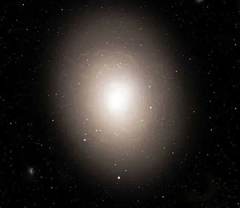
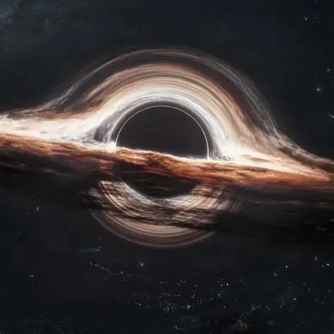
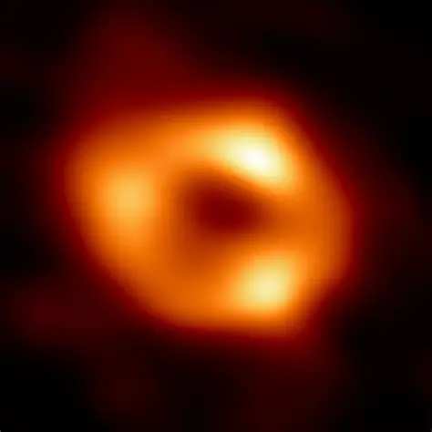
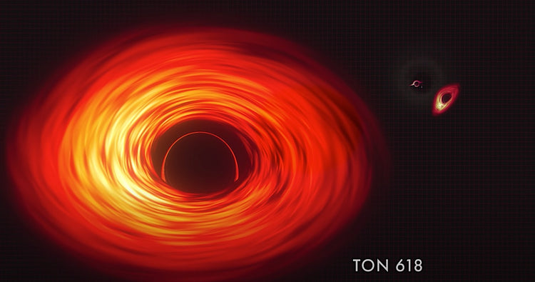

Regions of spacetime where gravity becomes so intense that nothing — not even light — can escape.
The central point inside a black hole where matter is compressed into an extremely tiny space with enormous density. At this point, gravity becomes infinitely strong and the known laws of physics begin to break down. Everything that falls into the black hole is believed to be pulled toward the singularity. Scientists still do not fully understand what happens there because current physics cannot explain such extreme conditions. The singularity is hidden behind the event horizon, making it impossible to observe directly.
The invisible boundary surrounding a black hole beyond which nothing can escape its gravity. Once an object crosses this boundary, even light cannot travel back out. It is often called the “point of no return” of a black hole. The size of the event horizon depends on the mass of the black hole. Although the event horizon itself is invisible, scientists can detect its effects on nearby matter and light.
The process where an object gets stretched and pulled apart by the extreme gravity of a black hole. Because gravity is much stronger closer to the black hole, the part nearest to it is pulled more intensely than the farther parts. This creates enormous tidal forces that elongate the object into a thin, spaghetti-like shape. For smaller black holes, this effect can happen before crossing the event horizon. It is one of the most dramatic consequences of Einstein’s theory of gravity.
A phenomenon where time moves slower in regions with extremely strong gravity, such as near a black hole. According to Einstein’s theory of General Relativity, gravity can bend both space and time. An observer far away would see time near the black hole passing much more slowly. This means a person close to a black hole could experience only a few hours while years pass elsewhere in the universe. It is one of the most fascinating and scientifically verified effects of extreme gravity.
Solar Masses of Sagittarius A*
Estimated Black Holes in Milky Way
km/s Speed of Light
John Michell proposes “dark stars.”
Einstein publishes General Relativity.
The term “Black Hole” is coined.
First image of a black hole captured by EHT.
Theoretically yes. Through Hawking Radiation, black holes slowly lose energy over unimaginable timescales.
Physics currently cannot fully explain conditions beyond the singularity.



